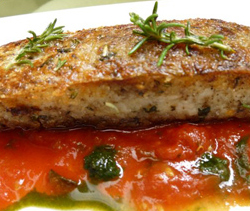

真鯛の香草グリル
トマトソースを添えて
トマトソースを添えて
- 調理時間：30 分
- （一人当たり）
- カロリー：245kcal
- たんぱく質：22.8g
- 脂質：11.6g
- 塩分：2.2g


＜４人分＞
- 鯛（切身）
- ４切
- パン粉
- １／４カップ
- ローズマリー
- １枝
- パセリ
- 少々
- 塩、コショウ
- 少々
【トマトバジルソース】
- ・トマト
- ３～４個
- ・バジルの葉
- ５～１０枚
- ・オリーブオイル
- 大さじ１
- ・塩、コショウ
- 各少々


- トマトは湯むきで皮を取り除いた後、ざく切りにする。バジルの葉も大きければ半分に切る。
ローズマリーは硬い枝を取り除き、２～３ｃｍ長さに切る。 - みじん切りにしたパセリとパン粉、塩、コショウを合わせ、香草パン粉をつくる。
- 鯛は表面のぬめりを取り、塩、コショウを両面にふり、②の香草パン粉を両面にまんべんなくつける。
- フライパンに油を入れて熱し、鯛を並べ入れ、表面にローズマリーをのせて一緒に焼く。
焼き色がついたら裏返し、中まで火が通ったらお皿に盛る。 - ④のフライパンをペーパータオルでサッと拭いて、トマトをいれて中火にかける。トロッとソース状になったら塩、コショウで味をととのえ、仕上げにオリーブオイルとバジルを加えてさっと温め、鯛にかける。
真鯛の香草グリル トマトソースを添えて
春の真鯛は産卵を控え、桜の咲き始めるころに身体がピンク色に染まることから「桜鯛」や「花見鯛」と呼ばれ、極上品として扱われています。「桜」も「鯛」も日本人にとっては、とても縁起のよい言葉で見た目も華やか。御祝いの席にぴったりで人気があります。
この時期、産卵前の鯛は旬のそのもので、栄養素をたっぷり溜めこんでいます。栄養素には、たんぱく質、ビタミンB1が豊富で、その他にもタウリン、ナイアシン、ＤＨＡ、ＥＰＡなどが含まれ、優秀食材。ビタミンB1は糖質の代謝を促し、疲労回復に有効です。さらに、バジルの香り成分には、鎮静作用があり、神経を鎮めて精神的な疲労を和らげる作用がありますので、心の不調を起こしやすい春先にＷ効果でオススメです。